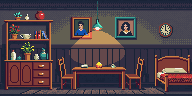
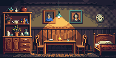
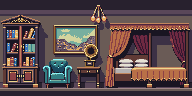
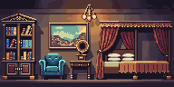
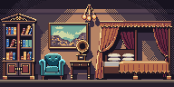
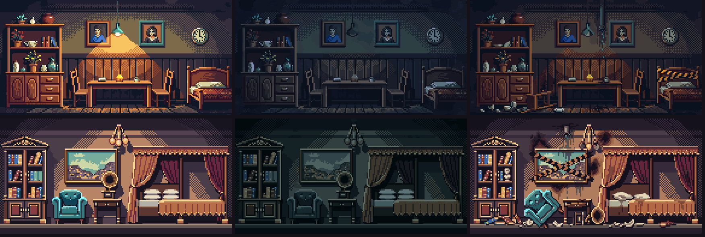
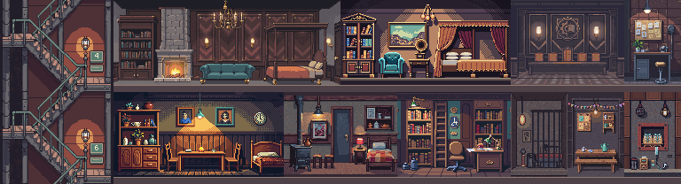

Superior and luxury suite, relit
Both suites looked flat next to the other rooms. They were edited in place (same room, same layout) to add highlights, shadows and dithering, and their off and broken states were remade from the new renders.
Superior suite: the hanging lamp now throws a dithered cone of light on the wall and table, the corners fall off into dithered shadow, and the wood picks up highlights. Contrast 36.5 → 47.3.
Luxury suite: the first try lit the room with a soft airbrushed glow, which does not match the pixel style (kept below, faded). The second asked for hard pixels only: a checkerboard-dithered light cone under the chandelier and cast shadows behind the furniture. Contrast 47.7 → 54.0.
Cost: 7 edit calls, about 140 generations.
Before and after
Superior suite


Luxury suite



States

In the shaft
